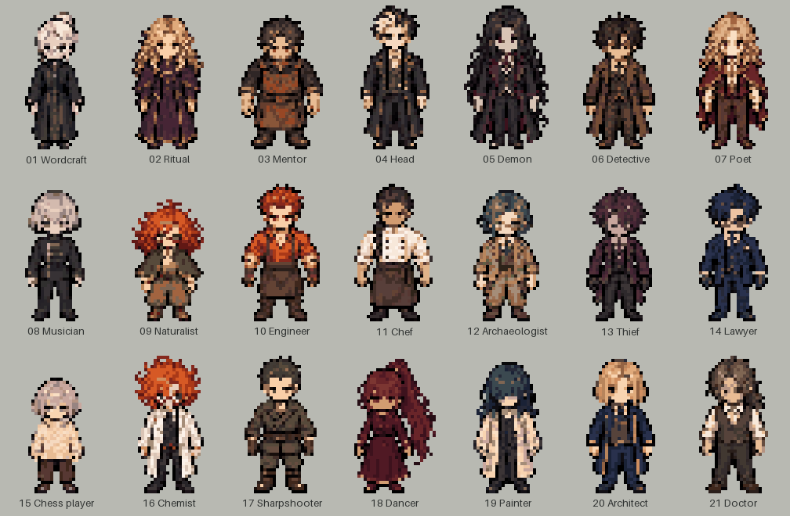

当前32×48角色帧与历史镜头首帧。点击场景可放大；每个镜头只呈现一个状态。
乐谱分析 · 逐小节时间 · 分镜说明 · 角色编号
地图基础格为32×32，现行角色帧为32×48。下方场景仍是历史分镜稿，旧人物造型不再作为制作标准。场景构图按16:9设计，原图实际比例可能略有偏差；此页完整显示图片，不裁切。

配乐：110小节，4/4，180 BPM，理论时长2:26.667。M85–88属准备，M89进入大调高潮。页面所列为音乐内时间，加5秒前导时统一顺延5秒。尾声纹章是本轮概念设计，标题采用曲名。